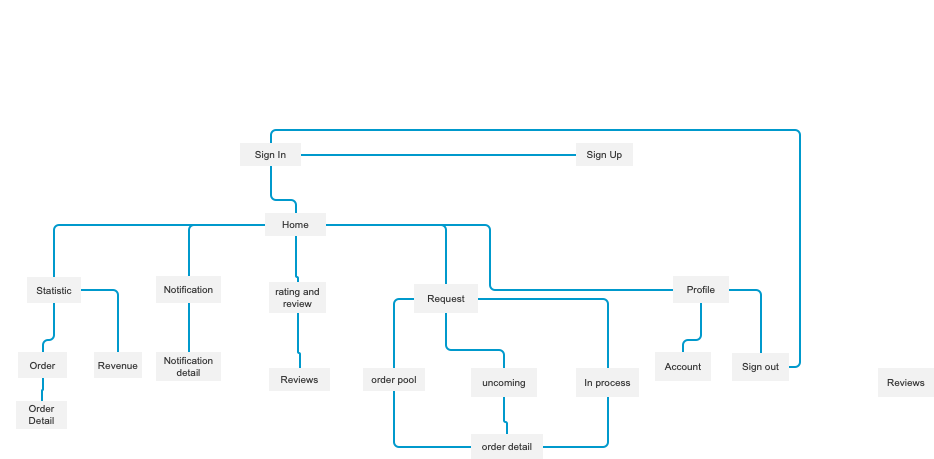
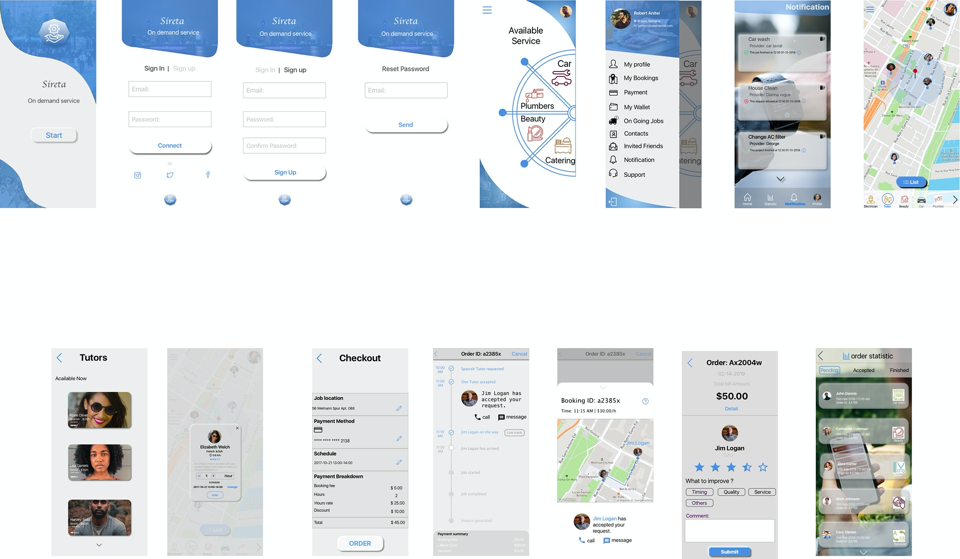
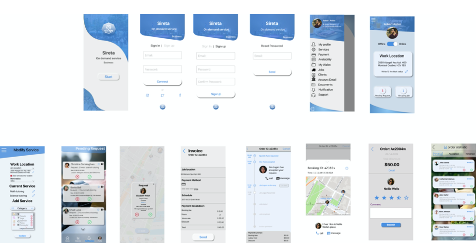

The sireta service center is a utility app meant to order common services like house cleaning,dry cleaning, plumbing etc as simple as several clicks, all our stress and hassle free order process like ordering a Pizza.
Context
Customers have always been demanding the best from their providers. The one that can satisfy every wish of the customer and ready to go the extra mile will survive any competition. This trend has been in existence since the dawn of trading and business, and the present version of this trend is On-Demand Services.
Sireta on demand service started as an internal project at Sireta Montreal,the purpose of this project is to help business member of Chefaid, which became a standalone product, helping Chefaide acquire and retain business member. We wanted to delight service booking experience for finding affordable, credible, reliable service in cities like Montreal, Toronto, New York. Sireta on demand service will be scaled to more cities after this business model approved in Montreal.
Pain:
- Service provider: Hard to connect more customer
- Customer: Hard to obtain satisfied service with reasonable price
Competitor Analysis


They are basically a similar idea but maidinmontreal.ca concentrate in house cleaning service, jiffyondemand.com only provide home repair service in Toronto and Ottawa. They are not our direct competitor in Montreal.
After analyzed information ,I found Sireta on-demand service can do better than 2 website above, it can provide more service on our website. Sireta on-demand service provides a new platform for service provider and user, any person can provide service when he wants(like tutoring, home service, car service, dry clean etc), user can choose service provider based on distance, review, price, schedule and set condition as he wants. All the stress and hassle free process like use Uber.
Users and audience
Statistic data of on-demand service
On-demand economy consumers tend to be younger, more educated, and more concentrated in urban areas, but as these services become more mature, their consumers are becoming more like the general population. Specifically:
- 48% are under age 35
- 52% are female
- 43% have a four year college degree or higher
- 51% live in a suburb and 14% live in an inner city
- 53% report an annual household income of at least $50,000, while 36% report an annual household income of at least $75,000
The target users of our product are professionals working in the city. These users have a strong preference for mobile-first, fast, real-time communication.We will consider design a friendly interface for female
My role
- UX, mobile, UI
- Built the product from zero
Goal
Create a platform offering person to sell their service to users instead of paying unreasonable rate for what they got.
- Every good service provider can make more money
- Every user only pay for the service what he got and wanted
Challenge
As a location based service for locals only find a way to provide accessibility for users to find service they want, and to deliver quality service on time. (right service, right time, right place and right price).
Metrics for success
- Measuring the amount of service provider added / period of time
- Measuring the amount of orders / period of time
- Measuring satisfaction of users & providers
Result
In developing
User research & Design
personas

To be sure we're addressing the right problems we designed our process around regular cycles of prototyping and face to face user sessions, validating every step of the way with the input from real users. Our starting point was observed the process of how the client order service as usual.
In our user interviews, in order to find home service, 70% of people would use internet search for service provider, 20% of people use friend’s referral, the other check information on paper yellow pages, newspaper etc.
As the research result, we plan to build a mvp( Minimum viable product ) at an early stage, help we iron out problems and gain feedback for future iterations.
For this product we set up our app’s architecture based on the two main use-cases: ‘user looking for service that I want to get’ or ‘service provider list the service what he want to provide’.
Focusing on the utility of finding service, we decided to strip the service and provider information to the essentials, maximizing the rest of the space for the services' list.
User journal (customer)

User journal (provider)

Based on the user flows, we constructed the information architecture such that there was a minimal level of difficulty to immediately accessing relevant information. After all, the goal of this product is to enable users to quickly and easily consume information.
Site map (customer)

Site map (provider)
Final user interface design
UI customer
UI provider
Outcome
The app was well received within the company. While it has not yet been released, it has already increased communication within the company by becoming a rallying point for strengthening internal community. Another by-product of this project was that it initialized the new mobile product design and development process within the company that ultimately helped it to take on new mobile projects which it wasn't able to before.
As a result of this experience, I learned that when designing a product for a new environment, bringing in the engineering team early on in the project really helps things to go smoothly down the line.